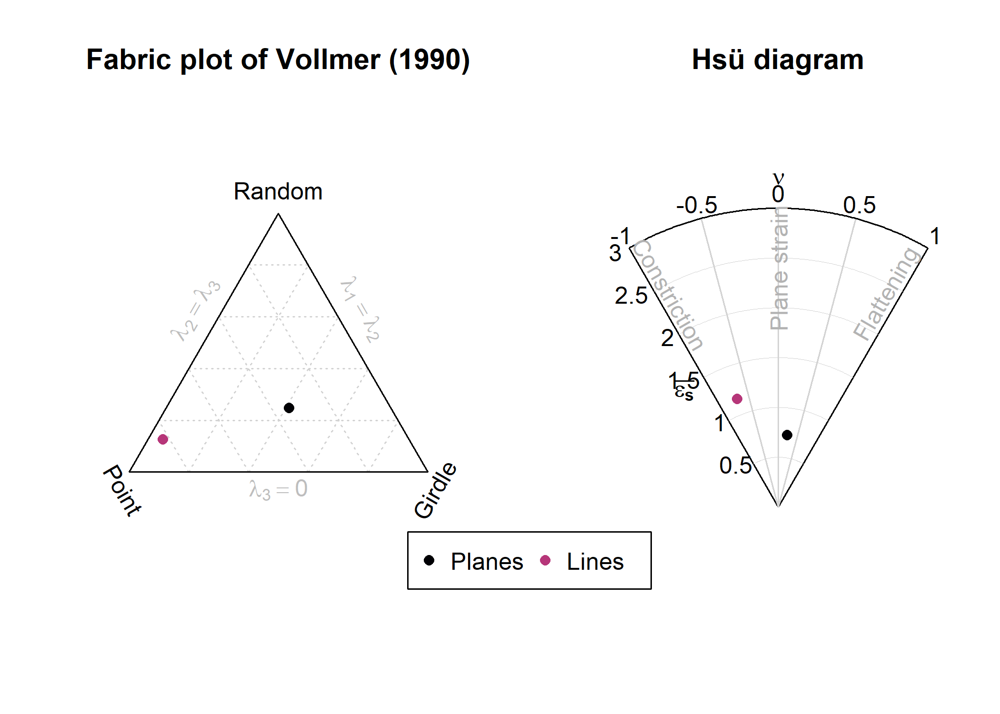

structr is a free and open-source package for R that provides tools for structural geology. The toolset includes
Analysis and visualization of orientation data of structural geology (including, stereographic projections, contouring, fabric plots, and statistics),
Statistical analysis: spherical mean and variance, confidence regions, hypothesis tests, cluster analysis of orientation data, and geodesic regression to find the best-fitting great circle or small circle through orientation data,
Reconstruction of fabric orientations in oriented drillcores by transforming the α, β, and γ angles,
Stress analysis: reconstruction of stress orientation and magnitudes from fault-slip data (stress inversion based on Michael, 1984), extracting the maximum horizontal stress of a 3D stress tensor), and visualization of magnitudes of stress in the Mohr circle,
Calculation fault displacement components,
Strain analysis (Rf/ϕ), contouring on the unit hyperboloid, Fry plots and Hsu plots
Vorticity analysis using the Rigid Grain Net method, and
Direct import of your field data from StraboSpot projects.
The {structr} package is all about structures in 3D. For analyzing orientations in 2D (statistics, rose diagrams, etc.), check out the tectonicr package!
Installation
You can install the development version of structr from GitHub with:
# install.packages("devtools")
devtools::install_github("tobiste/structr")Documentation
The detailed documentation can be found at https://tobiste.github.io/structr/
Examples
These are some basic examples which shows you what you can do with {structr}. First we load the package
Stereographic and equal-area projection
data("example_planes")
data("example_lines")
par(xpd = NA)
stereoplot(title = "Lambert equal-area projection", sub = "Lower hemisphere")
points(example_lines, col = "#B63679", pch = 19, cex = .5)
points(example_planes, col = "#000004", pch = 1, cex = .5)
legend("topright", legend = c("Lines", "Planes"), col = c("#B63679", "#000004"), pch = c(19, 1), cex = 1)
Spherical statistics
planes_mean <- sph_mean(example_planes)
planes_geomean <- geodesic_mean(example_planes)
planes_eig <- ot_eigen(example_planes)$vectors
par(mfrow = c(1, 2), xpd = NA)
stereoplot(title = "Planes", guides = FALSE)
points(example_planes, col = "lightgrey", pch = 1, cex = .5)
lines(planes_eig, col = c("#FB8861FF", "#FEC287FF", "#FCFDBFFF"), lty = 1:3)
points(planes_mean, col = "#B63679", pch = 19, cex = 1)
points(planes_geomean, col = "#E65164FF", pch = 19, cex = 1)
points(planes_eig, col = c("#FB8861FF", "#FEC287FF", "#FCFDBFFF"), pch = 19, cex = 1)
legend(
0, -1.1, xjust = .5,
legend = c("Arithmetic mean", "Geodesic mean", "Eigen 1", "Eigen 2", "Eigen 3"),
col = c("#B63679", "#E65164FF", "#FB8861FF", "#FEC287FF", "#FCFDBFFF"),
pch = 19, lty = c(NA, NA, 1, 2, 3),
cex = .75
)
lines_mean <- sph_mean(example_lines)
lines_delta <- delta(example_lines)
lines_confangle <- confidence_ellipse(example_lines)
stereoplot(title = "Lines", guides = FALSE)
points(example_lines, col = "lightgrey", pch = 1, cex = .5)
points(lines_mean, col = "#B63679", pch = 19, cex = 1)
stereo_confidence(lines_confangle, col = "#E65164FF")
lines(lines_mean, ang = lines_delta, col = "#FB8861FF")
legend(
0, -1.1, xjust = .5,
legend = c("Arithmetic mean", "95% confidence cone", "63% data cone"),
col = c("#B63679", "#E65164FF", "#FB8861FF"),
pch = c(19, NA, NA), lty = c(NA, 1, 1), cex = .75
)Best-fit great and small-circles (geodesic regression)
set.seed(20250411)
data("gray_example")
cleavage <- gray_example[1:8, ]
bedding <- gray_example[9:16, ]
cleavage_gc <- regression_greatcircle(cleavage)
bedding_gc <- regression_greatcircle(bedding)
cleavage_sc <- regression_smallcircle(cleavage)
bedding_sc <- regression_smallcircle(bedding)
par(mfrow = c(1, 2), xpd = NA)
stereoplot(title = "Best greatcircle", guides = FALSE)
lines(cleavage_gc$vec, col = "#000004FF")
lines(bedding_gc$vec, col = "#B63679")
points(cleavage, col = "#1D1147")
points(bedding, col = "#E65164", pch = 4)
legend(
0, -1.1,
xjust = .5,
col = c("#000004FF", "#B63679"),
lty = c(1, 1), legend = c("Cleavage greatcircle", "Bedding greatcircle"), bg = "white"
)
stereoplot(title = "Best smallcircle", guides = FALSE)
lines(cleavage_sc$vec, cleavage_sc$cone, col = "#000004FF")
lines(bedding_sc$vec, bedding_sc$cone, col = "#B63679")
points(cleavage, col = "#1D1147")
points(bedding, col = "#E65164", pch = 4)
legend(0, -1.1, xjust = .5,
col = c("#000004FF", "#B63679"), lty = c(1, 1), legend = c("Cleavage smallcircle", "Bedding smallcircle"), bg = "white"
)
Orientation tensor and fabric plots
par(mfrow = c(1, 2), xpd = NA)
vollmer_plot(example_planes, col = "#000004", pch = 16)
vollmer_plot(example_lines, col = "#B63679FF", pch = 16, add = TRUE)
title("Fabric plot of Vollmer (1990)")
hsu_fabric_plot(example_planes, col = "#000004", pch = 16)
hsu_fabric_plot(example_lines, col = "#B63679FF", pch = 16, add = TRUE)
legend(
2.5, -.25, xjust = .5, horiz = TRUE, xpd = NA,
legend = c('Planes', 'Lines'), col = c("#000004", "#B63679FF"), pch = 16
)
Fault plots
data("angelier1990")
faults <- angelier1990$TYM
par(mfrow =c(1, 2))
stereoplot(title = "Angelier plot")
angelier(faults)
stereoplot(title = "Hoeppener plot")
hoeppener(faults, points = FALSE)Fault-slip inversion
Compute deviatoric stress tensor and calculate 95% confidence intervals using bootstrap samples:
set.seed(20250411)
faults_stress <- slip_inversion(faults, boot = 10)Visualize the slip inversion results:
cols <- c("#000004FF", "#B63679FF", "#FEC287FF")
R_val <- round(faults_stress$R, 2)
R_CI <- round(faults_stress$R_conf, 2)
stereoplot(
title = "Principal stress axes",
sub = paste0("Relative stress magnitudes R = ", R_val, " | ", "95% CI: [", R_CI[1], ", ",R_CI[2], "]"),
guides = FALSE
)
angelier(faults, col = "grey80")
stereo_confidence(faults_stress$principal_axes_conf$sigma1, col = cols[1])
stereo_confidence(faults_stress$principal_axes_conf$sigma2, col = cols[2])
stereo_confidence(faults_stress$principal_axes_conf$sigma3, col = cols[3])
text(faults_stress$principal_axes,
label = rownames(faults_stress$principal_axes),
col = cols, adj = -.25
)
beta <- faults_stress$fault_data$beta
beta_mean <- round(faults_stress$beta)
beta_CI <- round(faults_stress$beta_CI$conf.angle)
stereoplot(
title = "Stress inversion accuracy",
sub = bquote("Average deviation" ~ bar(beta) == .(beta_mean) * degree ~ "\U00B1" ~ .(beta_CI) * degree),
guides = FALSE
)
angelier(faults, col = assign_col(beta))
legend_c(
seq(min(beta), max(beta), 10),
title = bquote("Deviation angle" ~ beta ~ "(" * degree * ")")
)
Azimuth of the maximum horizontal stress (in degrees):
SH(
S1 = faults_stress$principal_axes[1, ],
S2 = faults_stress$principal_axes[2, ],
S3 = faults_stress$principal_axes[3, ],
R = faults_stress$R
)
#> [1] 60.80844Mohr circles
Mohr_plot(sigma1 = faults_stress$principal_vals[1], sigma3 = faults_stress$principal_vals[3], unit = NA)
points(faults_stress$fault_data$sigma_n, faults_stress$fault_data$sigma_s)
Strain analysis
2D Strain
data(ramsay)
par(mfrow = c(1,2))
Rphi_plot(r = ramsay[, 1], phi = ramsay[, 2])
Rphi_polar_plot(ramsay[, 1], ramsay[, 2], proj = "eqd")
3D Strain
data("holst")
R_XY <- holst[, "R_XY"]
R_YZ <- holst[, "R_YZ"]
par(mfrow = c(1,2))
flinn_plot(R_XY, R_YZ, log = TRUE, col = "#B63679", pch = 16)
hsu_plot(R_XY, R_YZ, col = "#B63679", pch = 16)
Vorticity analysis
Rigid Grain Net
# assuming the mean orientation resembles the foliation
theta <- tectonicr::circular_mean(ramsay[, 2]) - ramsay[, 2]
RGN_plot(r = ramsay[, 1], theta = theta, col = "#B63679")
title(main = "Rigid Grain Net")Author
Tobias Stephan (tstephan@lakeheadu.ca)
Feedback, issues, and contributions
I welcome feedback, suggestions, issues, and contributions! If you have found a bug, please file it here with minimal code to reproduce the issue.